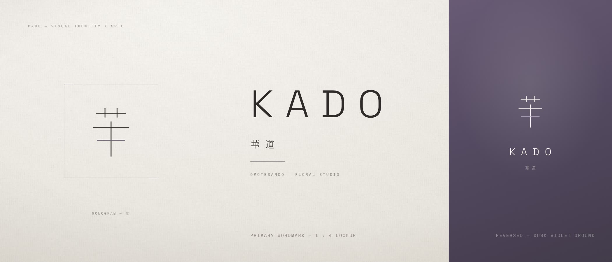
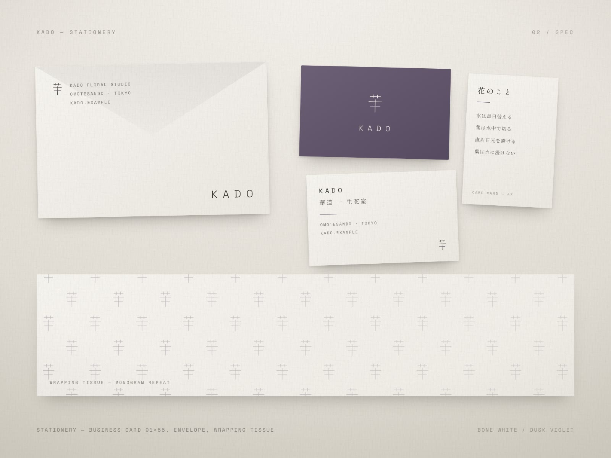
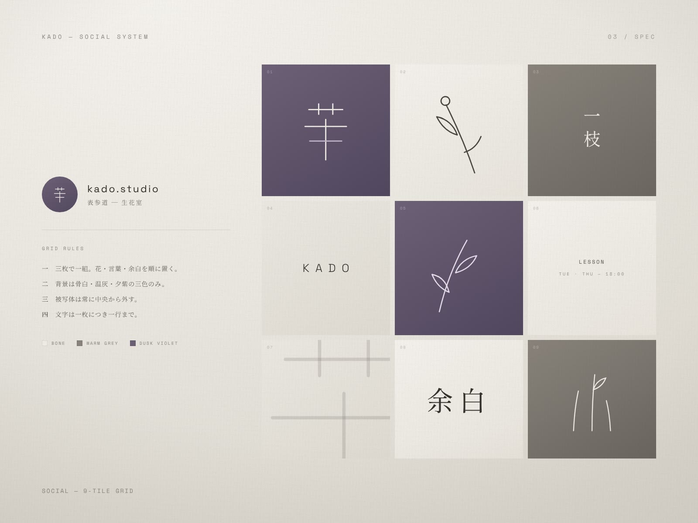
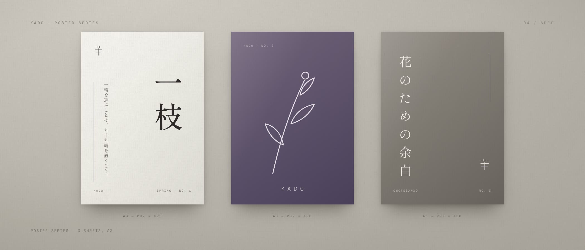

表参道の生花スタジオを想定したビジュアルアイデンティティ。「引くことで生まれる美」を、色数・線・余白のすべてに通した。
架空のプロジェクトです。実在のクライアント・実績ではありません。

想定したのは、華道を暮らしの側へ開く表参道の小さな生花室。コンセプトは「余白」——主役は常に生けられた花であり、ブランドはその背景として一歩退く。この距離感を保つこと自体を設計課題として扱った。
色は骨白・温灰・夕紫の三値のみ。線幅は一種類に固定し、書体はしっぽり明朝と Space Grotesk の二書体に絞った。KUROMOJI より一段軽く、空気の量が多いシステムとして組み立てている。


モノグラムは「華」を五本の直線に還元したもの。一本だけを夕紫に置き換え、色を持つ線が常に一本という規則をシステム全体の背骨にした。茎の直立と葉の水平という、生け花の構造そのものを字形に重ねている。
展開したのは、名刺の表裏・封筒・花のケアカード・モノグラムを千鳥に反復した包装紙、A3のポスター3点、そしてSNSの9タイルグリッド。タイルは花・言葉・余白の三枚で一組とし、背景は三色から、文字は一枚につき一行までという運用ルールまで含めて設計した。

本ページは構想（Spec）です。実在するクライアントの業務ではなく、掲載している画像はすべてこの案のために制作したデザインボードです。
効果・売上・受賞・メディア掲載といった実績の数値は一切掲載していません。示しているのはデザインの意図と、実際に作ったアウトプットの範囲だけです。